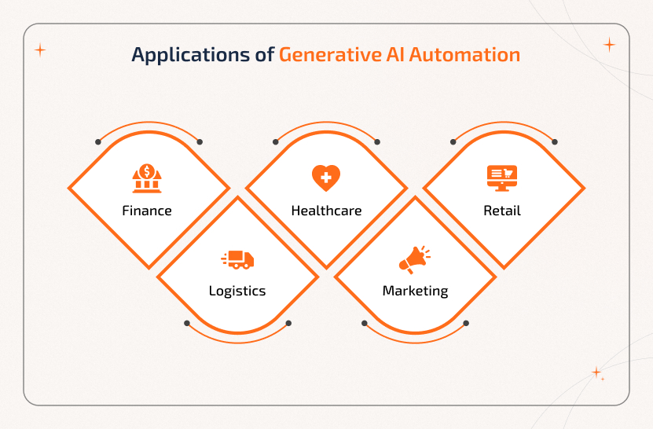
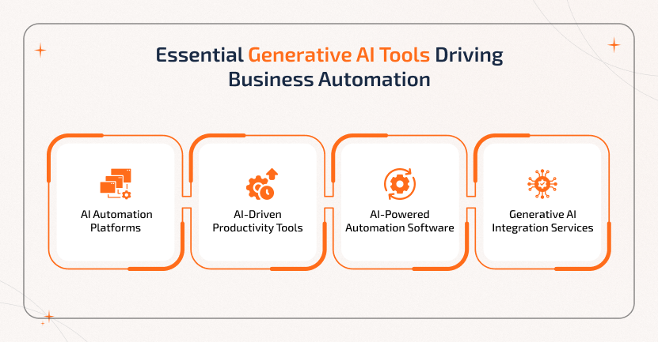
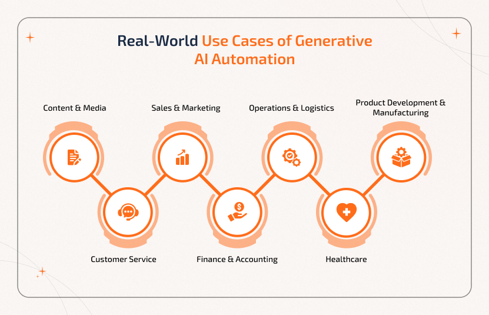
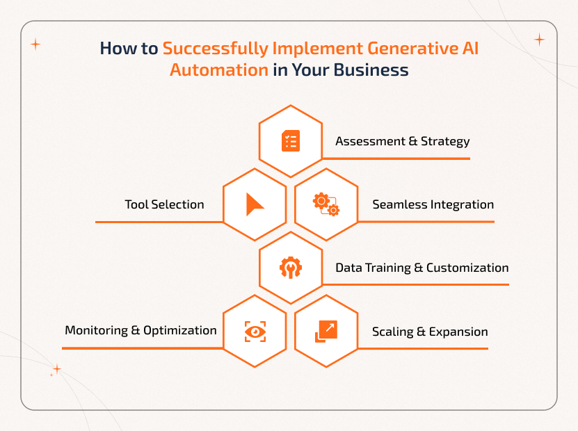
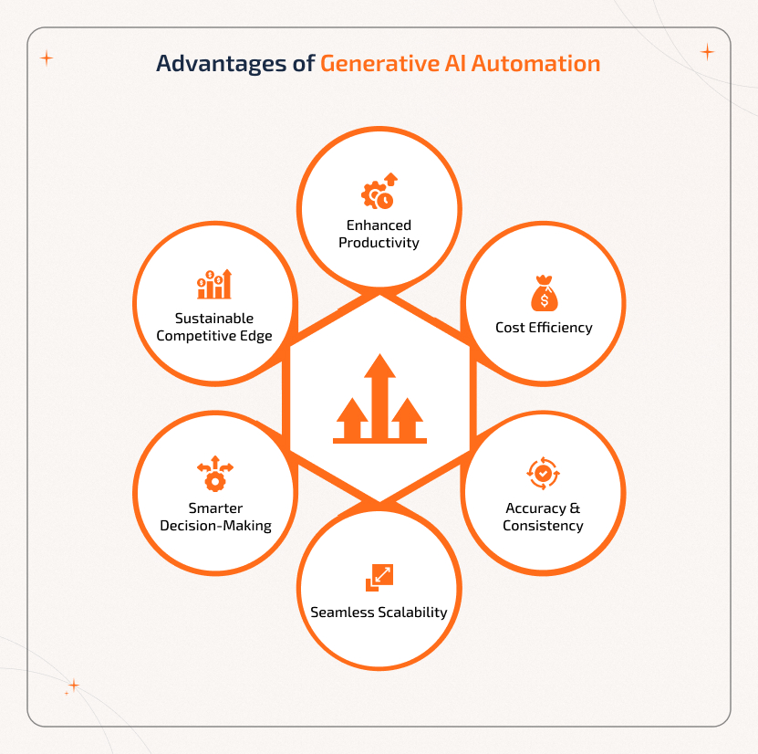

Imagine a workplace where routine tasks run themselves, you instantly get insights, and your team can focus entirely on innovation. That's what Generative AI Automation does by combining the power of artificial intelligence with intelligent automation to optimize workflows across industries. Companies can automate repetitive tasks, reduce human errors, and accelerate complex processes with the help of AI-powered automation and AI-driven productivity tools.
In fact, studies show that companies implementing AI-driven automation see up to a 40% improvement in operational efficiency within the first year. From automating repetitive processes to generating actionable insights, business process automation with AI enables teams to focus on strategic initiatives rather than handling repeated tasks.
Besides, with generative AI for enterprises, decision-making becomes more accurate, faster, and backed by data that you can trust. This results in a future-ready business that is agile, efficient, and ready to stay ahead of the competition.
Are you ready to unlock smarter workflows and supercharge productivity? Generative AI Automation is your gateway to the next level of business efficiency.
What Does Generative AI Automation Mean?
Generative AI Automation is all about using advanced AI systems, especially generative AI , to handle and improve repetitive or complex business tasks automatically. While traditional automation follows fixed rules, generative AI can learn, adapt, and create outputs that feel like they come from a human. This makes decision-making and problem-solving smarter.
For instance, AI task automation can generate reports on its own, produce marketing content, and even help with coding, all without needing constant human guidance. As a result, tools like machine learning automation and auto-generative AI are becoming essential for modern businesses looking to save time and reduce errors
In other words, it is about merging AI-powered workflow optimization with intelligent automation to boost productivity, efficiency, and innovation across the organization.
Why Embracing Generative AI Automation is Essential?
In today's fast-moving world, relying only on manual work or outdated automation is not enough. Businesses need smarter systems to scale quickly, minimize errors, and speed up decision-making. This is what Generative AI automation transformation delivers.
With intelligent automation with AI, repetitive tasks are handled seamlessly by machines. This allows teams to focus on creativity, strategy, and more valuable work. By adopting business process automation with generative AI, organizations can boost productivity, reduce risks, ensure stronger compliance, and uncover meaningful insights hidden in massive datasets.
That said, embracing generative AI automation is not just a trend—it is a necessityfor building agile, future-ready businesses in a rapidly evolving digital landscape.
How Generative AI Enhances Automation & Drives Smarter Business Processes
Generative AI Automation creates dynamic, adaptive, and intelligent workflows and thus goes beyond traditional rule-based systems. Instead of merely following rigid instructions, AI-assisted decision-making allows automation to adjust in real-time as new data and situations emerge.
With the help of generative AI workflow automation, businesses can take up tasks like writing emails, analyzing customer feedback, and predicting market trends more quickly and accurately. At the same time, AI-driven productivity tools, AI process automation, and AI workflow optimization help reduce manual effort, improve overall accuracy, and speed up operations.
This powerful combination of intelligence and automation is what sets AI-powered automation apart. Besides executing tasks, it learns, adapts, and delivers smarter outcomes, making it essential for enterprises aiming for efficiency and scalability.
Our generative AI automation helps businesses cut 35% costs, scale faster & drive smarter decisions.
Transformation of Business Automation by Generative AI
The rise of generative AI has opened up new possibilities for how enterprises look at automation. Unlike being limited to routine efficiency, automation in today's era powers strategic innovation, continuous learning, and cross-functional collaboration. With generative AI, automation is not just about executing—it is about actively contributing to shaping new ideas, forecasting trends, and driving smarter decision-making.
This paradigm shift means businesses are capable of building self-optimizing systems that evolve with changing data, markets, and customer needs.
From predictive insights that guide long-term strategy to adaptive workflows that scale effortlessly, generative AI automation creates a business environment that is faster, future-ready, and resilient.
Generative AI empowers enterprises to unlock growth, creativity, and competitive advantage.
Applications of Generative AI Automation
Generative AI automation is not just limited to one sector; it is reshaping businesses across industries with intelligent and adaptive solutions.

1. Finance
Generative AI automation detects fraud in real-time, improves financial forecasting, and automates compliance reporting.
2. Healthcare
It supports faster diagnostics, enhances patient engagement through chatbots, and accelerates drug discovery
3. Retail
It delivers personalized product recommendations, automatically manages inventory, and improves customer experience.
4. Logistics
Generative AI automation optimizes supply chains, streamlines route planning, and predicts demand for seamless operations.
5. Marketing
It generates high-quality content, refines ad targeting, and optimizes campaigns for better ROI
All these represent a wide range of use cases that make AI automation for startups and large enterprises powerful. Whether you want to improve efficiency, reduce costs, or enable smarter decisions, generative AI for enterprises ensures that every industry can integrate automation.
Essential Generative AI Tools Driving Business Automation
Businesses can gain the fullest power of generative AI workflows through the right set of tools that make automation practical, adaptable, and scalable.

1. AI Automation Platforms
AI automation tools help integrate seamlessly with enterprise systems. This enables process automation across finance, operations, and HR.
- Platforms – UiPath, Automation Anywhere
- Use Case – Process automation across functions
- Business Benefit – Cost savings, efficiency at scale
2. AI-Driven Productivity Tools
These tools help teams work smarter by supporting document generation, workflow management, and data analytics.
- Platforms – Jasper, Grammarly Businesse
- Use Case – Content generation, communication
- Business Benefit – Faster content creation, brand consistency
3. AI-Powered Automation Softwar
Using these tools optimizes processes, delivers predictive insights, and enables smarter decision-making at scale..
- Platforms – Notion AI, ClickUp AI
- Use Case – Workflow & task management
- Business Benefit – Improved collaboration, time savings
4. Generative AI Integration Services
These ensure tools are deployed effectively across departments, aligning automation with business goals.
- Platforms – Microsoft Copilot, Google Cloud AI
- Use Case – Predictive insights, decision support
- Business Benefit – Data-driven decision-making
By utilizing these tools, businesses can achieve more than just automation. They can uncover insights, drive innovation, and create new growth opportunities powered by AI automation.
Real-World Use Cases of Generative AI Automation
Generative AI automation is bringing transformative impacts across how industries operate—going beyond routine efficiency to deliver smarter, faster, and more adaptive workflows. Below are real-world applications across key sectors.

1. Content & Media
- Automated writing for documentation, blogs, and reports without diminishing quality.
- Summarization and translation of content in multiple languages.
- Creative generation of social media posts, visuals, and marketing copy.
2. Customer Service
- AI chatbots and virtual assistants offer 24/7 query resolution support.
- Real-time sentiment analysis enables understanding customer emotions instantly.
- Automated ticket routing connects complex cases to the right agent.
3. Sales & Marketing
- Predictive lead scoring identifies high-potential customers.
- Personalized campaigns deliver customized ads, emails, and offers.
- Market trend prediction supports data-driven strategies.
4. Finance & Accounting
- Automated reconciliations ensure error-free financial records.
- AI-powered forecasting supports cash flow and budget planning.
- Compliance reporting reduces risks and accelerates regulatory adherence.
5. Operations & Logistics
- Accurate demand prediction through AI-powered inventory management.
- Supply chain optimization reduces disruptions and delays.
- Automated scheduling improves workforce and resource allocation.
6. Healthcare
- AI-assisted diagnostics analyze scans and test results faster.
- Patient engagement chatbots streamline appointment scheduling and reminders.
- Accelerated drug discovery through molecular modeling and analysis.
7. Product Development & Manufacturing
- Generative design suggestions create efficient product prototypes.
- 3D modeling and simulation reduce testing costs.
- Predictive maintenance prevents machine downtime.
Generative AI task automation and AI workflow optimization enable businesses to achieve higher efficiency, minimize human error, and adapt quickly to changing demands. For startups and enterprises alike, it unlocks a new level of productivity, accuracy, and agility.
How to Successfully Implement Generative AI Automation in Your Business
Implementing generative AI automation is not just about adopting tools—it requires a well-defined roadmap to maximize value and reduce risks. Below is a step-by-step approach any business can follow:

Step 1: Assessment & Strategy
The first step is to identify high-impact processes for automation. These include repetitive tasks, data-heavy workflows, or customer-facing operations. Defining clear KPIs ensures measurable success.
Step 2: Tool Selection
Evaluate and choose the right AI automation platforms and AI-powered workflow tools based on scalability, integration capabilities, and business needs.
Step 3: Seamless Integration
Leverage generative AI integration services to connect AI solutions with existing enterprise systems such as ERP, CRM, or HRMS, without disrupting ongoing operations.
Step 4: Data Training & Customization
Fine-tune generative AI models with enterprise-specific data to improve accuracy, personalization, and domain performance.
Step 5: Monitoring & Optimization
Continuously track performance using AI-driven analytics, refine workflows, and ensure compliance with data governance and security standards
Step 6: Scaling & Expansion
After validation, extend automation across departments or business units to drive enterprise-wide transformation.
By following this structured framework, businesses can accelerate ROI, reduce deployment risks, and unlock the full potential of AI-powered automation.
Get expert guidance to plan, deploy & scale AI automation that drives real ROI.
Advantages of Generative AI Automation
According to McKinsey, businesses that embrace AI-driven automation can boost productivity by up to 40% while significantly reducing operational costs (McKinsey Report). With generative AI automation, organizations can unlock benefits that extend far beyond routine task execution

1. Enhanced Productivity
Generative AI automates time-consuming, repetitive tasks—allowing teams to focus on strategic initiatives that drive real business growth.
2. Cost Efficiencyt
Automation reduces manual intervention, cutting down operational expenses while improving the overall quality of output.
3. Accuracy & Consistency
AI ensures precision in processing, minimizing errors and delivering uniform results at scale.
4. Seamless Scalability
Whether managing ten tasks or ten thousand, AI-powered automation adapts effortlessly to growing business demands.
5. Smarter Decision-Making
Generative AI automation provides real-time insights and predictive analytics, enabling leaders to make faster, data-driven decisions.
6. Sustainable Competitive Edge
Companies that adopt generative AI early position themselves as innovators, gaining a long-term advantage in rapidly evolving markets.
Challenges in Generative AI Automation
While generative AI automation offers tremendous opportunities, businesses must address certain challenges to ensure successful adoption and long-term results.
1. Data Privacy & Security Risks
Handling sensitive data requires strict security protocols to prevent breaches, misuse, and regulatory non-compliance.
2. Bias in AI Models
When AI systems are trained on incomplete or skewed data, they may produce biased results that undermine fairness and accuracy in decision-making.
3. High Initial Investment
Implementing AI automation often requires significant upfront investment in infrastructure, tools, and talent—posing a barrier for some enterprises.
4. Integration with Legacy Systems
Organizations still reliant on outdated IT systems face challenges in seamlessly integrating advanced AI solutions.
5. Need for Specialized Expertise
Generative AI automation is not a plug-and-play solution. It requires skilled data engineers, scientists, and domain experts to fine-tune models for specific use cases.
6. Ongoing Monitoring & Compliance
As AI models evolve, continuous monitoring is essential to ensure flexibility, regulatory compliance, and consistent accuracy.
By addressing these challenges early, businesses can develop smarter strategies, implement the right mitigation measures, and unlock the full potential of generative AI automation.
Generative AI Automation vs Traditional Automation
Traditional automation relies on rule-based systems where tasks are executed according to predefined instructions. While effective for repetitive processes, it lacks flexibility and adaptability. These systems are rigid, often requiring manual updates when data changes, exceptions arise, or unexpected scenarios occur.
Generative AI automation, on the other hand, uses machine learning and intelligent automation to analyze real-time data, adapt to changing conditions, and generate outcomes that mimic human creativity and decision-making. This makes it far more dynamic, scalable, and future-ready compared to legacy automation systems.
| Aspect | Traditional Automation | Generative AI Automation |
|---|---|---|
| Approach | Rule-based, follows fixed instructions | Data-driven, adaptive, and creative |
| Flexibility | Limited, struggles with exceptions | Learns and adapts to new scenarios |
| Use Cases | Repetitive tasks like data entry, invoice processing | Dynamic tasks like content generation, predictive analytics, customer engagement |
| Scalability | Requires reprogramming to scale | Scales seamlessly with growing data and tasks |
| Decision-Making | No intelligence—executes pre-set rules/td> | AI-assisted, provides actionable insights |
| User Experience | Static, limited interactions (e.g., rule-based chatbots) | Personalized, human-like interactions (e.g., AI chatbots with LLMs) |
Generative AI for Startups & Enterprises
Generative AI automation creates opportunities for businesses of all sizes, but the way it is applied differs between startups and enterprises.
For Startups
Generative AI enables faster scaling with fewer resources. Instead of building large teams, smaller companies can leverage AI for:
1. Customer service through AI chatbots
2. Automated content creation for marketing
3. AI-assisted product design and prototyping
This allows startups to compete with larger players while staying lean and cost-efficient.
For Enterprises
The focus shifts to enterprise-grade AI process automation tools. Here, generative AI not only saves time but also manages complexity across multiple departments and global operations. Enterprises commonly use AI for:
1. Large-scale data analysis and insights
2. Compliance reporting and regulatory automation
3. Intelligent supply chain management
4. Personalized customer engagement at scale
POV: Startups use generative AI to accelerate growth and reduce costs, while enterprises leverage it to optimize efficiency, drive innovation, and maintain a competitive edge in global markets.
How to Choose the Best Generative AI Automation Platform – A Practical Guide
Choosing the right AI automation platform is one of the most critical steps for businesses aiming to derive real value from generative AI. With many options available, selecting the right solution depends on features, scalability, and alignment with your business goals.
Key Factors to Consider:
1. Ease of Integration
The platform should connect seamlessly with existing systems, workflows, and data sources. Leveraging generative AI integration services ensures smooth adoption without disrupting operations.
2. Scalability
Choose a solution that grows with your business—whether you are a startup handling hundreds of tasks or an enterprise managing millions.
3. Customization & Flexibility
The best platforms allow fine-tuning of AI models to align with your industry needs, compliance standards, and customer expectations.
4. Security & Compliance
Select platforms with strong data governance, encryption, and adherence to regulations like HIPAA, GDPR, and ISO standards.
5. Support & Consultation
By partnering with providers offering AI software development consultation, businesses gain expert guidance on implementation, training, and continuous optimization
When these factors are prioritized, businesses can adopt generative AI business solutions that not only automate processes but also foster innovation, efficiency, and long-term growth.
Future of Generative AI in Business Operations
The future of business operations is increasingly powered by generative AI, which is evolving from a support tool into a core driver of enterprise transformation. As organizations advance deeper into AIAI process automation tools-enabled digital transformation, generative AI is unlocking possibilities that go beyond traditional efficiency gains.
One major trend is the growth of AI-powered enterprise systems. Instead of using AI as a standalone tool, companies are embedding it directly into core platforms such as finance, HR, supply chain, and customer service. This enables the creation of intelligent systems that optimize themselves and continuously learn from new data.
The rise of large language models (LLMs) further enhances automation, allowing machines to understand human language, context, and intent. This empowers AI to build smarter chatbots , improve demand forecasting, deliver personalized marketing campaigns, and even support strategic decision-making.
What We Can Expect:
- Hyper-personalization in customer experiences through AI-driven engagement.
- Autonomous workflows where AI not only executes tasks but also designs and improves processes.
- Cross-functional integration where AI connects data across departments, providing a holistic view of business performance.
- Ethical and responsible AI adoption that balances innovation with transparency and trust.
The future of generative AI in business lies in creating adaptive, intelligent enterprises that are efficient, resilient, creative, and innovation-driven.
Why Choose Sparkout for Generative AI Automation?
At Sparkout, we don’t just implement AI—we help businesses transform with future-ready automation solutions. With deep expertise in AI, automation, and enterprise integration, our team delivers impactful results.
Reasons to Choose Us:
1. Tailored Solutions
We design custom generative AI automation strategies aligned with your business goals.
2. Seamless Integration
Our experts ensure smooth deployment across both legacy and modern systems.
3. Proven Expertise
With years of success in AI development, workflow optimization, and intelligent automation, Sparkout is a trusted partner.
4. End-to-End Support
From consultation to deployment and scaling, we guide you through every step of the automation journey.
5. Security & Compliance
Our solutions are built with strong governance, encryption, and compliance frameworks at their core.
6. Innovation-Driven Approach
We leverage the latest AI technologies, including large language models (LLMs), to maximize your business impact.
With Sparkout as your partner, businesses don’t just adopt AI automation—they unlock a smarter, faster, and more competitive way of working.
Connect with our experts to design cost-efficient, scalable automation solutions tailored to your growth.
Conclusion – Driving the Future with Generative AI Automation
The rise of generative AI automation is reshaping business operations across industries. From AI-powered automation in daily workflows to enterprise-wide AI solutions that transform entire sectors, organizations are discovering smarter, faster, and more cost-efficient ways to operate.
Whether you’re a startup exploring AI automation to scale or an enterprise embedding AI-powered systems into core operations, the future belongs to businesses that embrace intelligent automation. By leveraging generative AI, you’re not just keeping pace—you’re leading the way toward innovation, resilience, and sustainable growth.